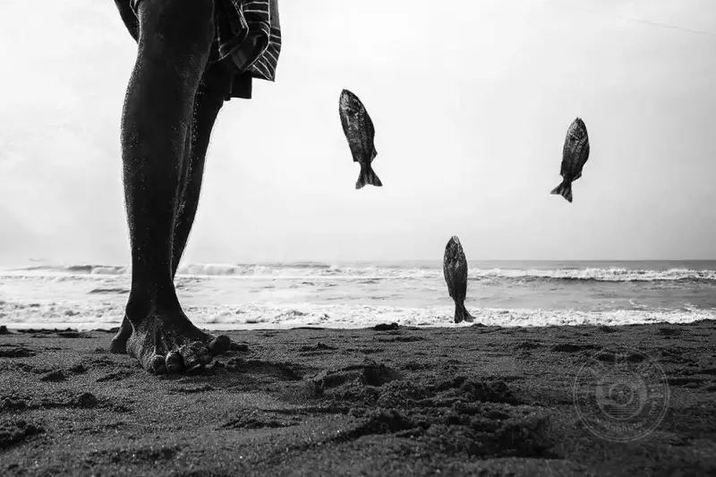
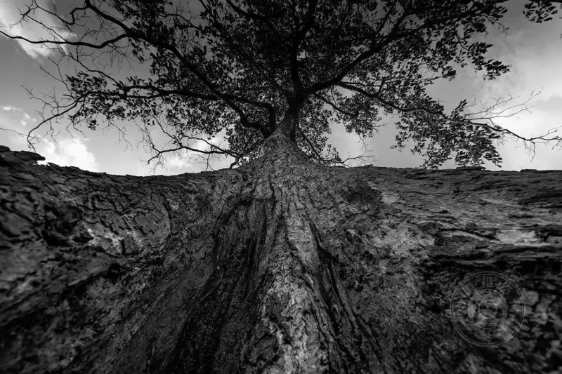
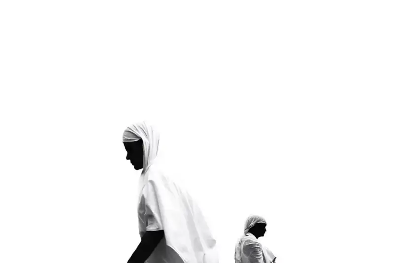
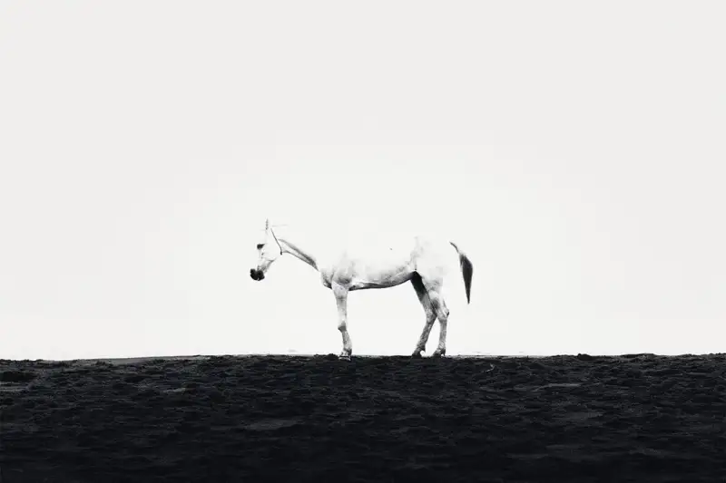
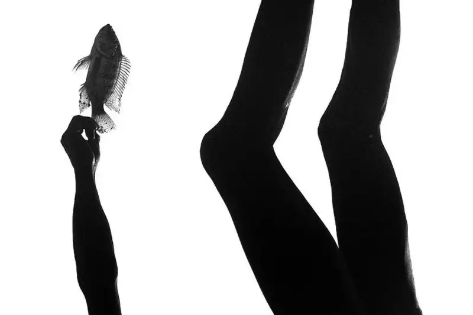

| The decisive moment is the instant when your heart presses the shutter on its own. Whatever you call it, the essence never changes. The awareness in that instant shapes your photo. It is roughly the balance between your left and right brain: logic with creativity, and reason with intuition.
In this article I share some thoughts on the shutter moment. These are five questions worth stopping to ask yourself before you press the shutter.
©Prashanth Swaminathan
01 Why do you take the photo?
This is the most important part to me.
Before you press the shutter, your subconscious needs to raise a series of questions: Why do you take this photo? What in this scene pulls you so much that you must shoot it?
If the answer is yes, press the shutter. If you hesitate, put the camera down and look a while longer.
As someone said, art is more about self-realization. These questions themselves, and your honest answers to yourself, slowly sharpen the artist inside you. They teach you when to act.

©Prashanth Swaminathan
02 Repetition and boredom
Sunsets, sunrises, dragonflies, old people, portraits of homeless people, and poverty. These subjects have been photographed countless times. Almost every enthusiast who enters photography produces many images that feel familiar.
The real regret is not the repeated subject. It is the lack of vision and personality.
Before you raise the camera, ask yourself honestly:
• Does this scene truly surprise me and make me curious?
• Have I seen this exact composition somewhere before?
• Does the scene in front of me make my blood run faster?
If all three answers are yes, keep shooting with focus. If you only raise the camera out of habit, put it down. Walk around, and wait for a real spark.

©Prashanth Swaminathan
03 Your photos are yourself
I have long believed one idea: You are your photos.
Your portfolio is a projection of your vision, and even a reflection of your character. When you decide to make a photo with artistic value, it should not be a search for a reason to frame. It should be a natural expression.
Try to quiet down. Look inside yourself for a translation that turns the scene in front of you into your own language. Build a link between the scene and your inner self. Fill that space, and then press the shutter with respect.
The quality of a photo often depends less on skill and more on whether you were truly present in that moment.

©Prashanth Swaminathan
04 Let go of your obsession with style
Many people treat style as a safe small shell. They hide inside it. They fear loss, fear rejection, and resist stepping out. A personal label is often tied tightly to style. Forcing your photos to shout your name only creates blockage.
Real personality is not advertised. It is not a repeated formula made for awards, approval, or likes.
Delete the thought "I must shoot my own style" from your mind. Face every frame with freshness and enthusiasm. Your images will speak for you.

©Prashanth Swaminathan
05 The ethical line
The last point is about ethics.
I call it ethics, not rules, because art and photography have no iron laws. But one thing should not be ignored: before you press the shutter, be clear about how far you are willing to go for this photo.
Whether you shoot street, travel, or wildlife, it is not okay to enter other people's lives without permission, to create disorder, or to cause offense.
Respect your subjects. See them and understand them with a true heart. Carry this respect and care before and after you press the shutter.

©Prashanth Swaminathan
Taking the photo is only the start. What is truly worth keeping is the awareness and kindness in the moment you press the shutter.
Keep your love for it, and keep shooting.
I hope these five questions bring a slightly different thought to your next shoot.